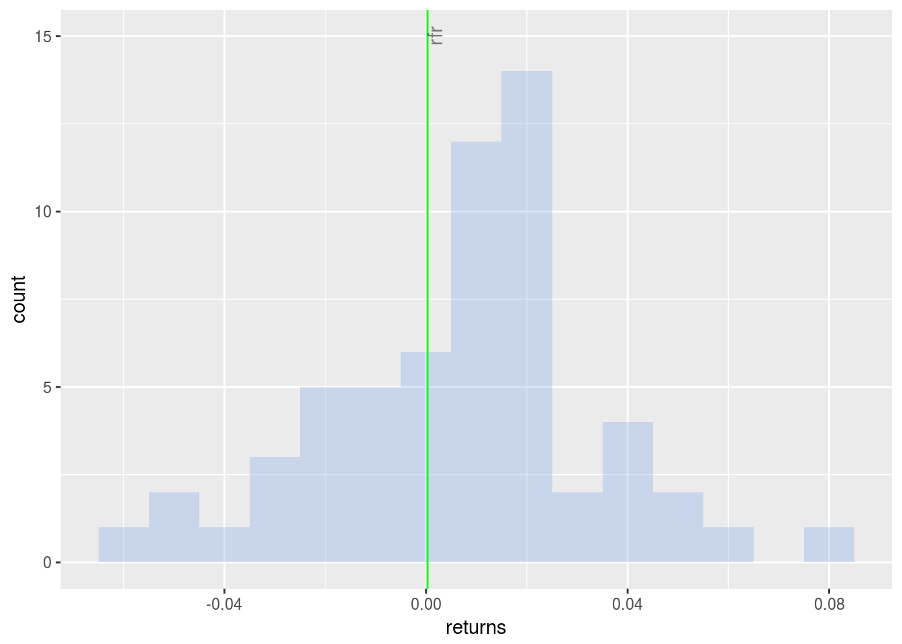
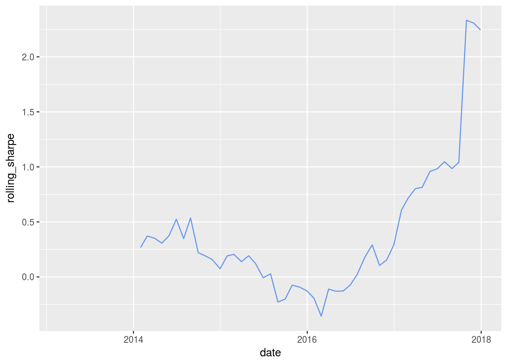

Chapter 2 Sharpe Ratio
## ── Attaching packages ───────────────────────────────────────────────────────────── tidyverse 1.2.1 ──## ✔ ggplot2 2.2.1 ✔ purrr 0.2.4
## ✔ tibble 1.4.1 ✔ dplyr 0.7.4
## ✔ tidyr 0.7.2 ✔ stringr 1.2.0
## ✔ readr 1.1.1 ✔ forcats 0.2.0## Warning: package 'ggplot2' was built under R version 3.4.3## Warning: package 'readr' was built under R version 3.4.3## Warning: package 'stringr' was built under R version 3.4.3## Warning: package 'forcats' was built under R version 3.4.3## ── Conflicts ──────────────────────────────────────────────────────────────── tidyverse_conflicts() ──
## ✖ dplyr::filter() masks stats::filter()
## ✖ dplyr::lag() masks stats::lag()## Loading required package: lubridate##
## Attaching package: 'lubridate'## The following object is masked from 'package:base':
##
## date## Loading required package: PerformanceAnalytics## Loading required package: xts## Loading required package: zoo##
## Attaching package: 'zoo'## The following objects are masked from 'package:base':
##
## as.Date, as.Date.numeric##
## Attaching package: 'xts'## The following objects are masked from 'package:dplyr':
##
## first, last##
## Attaching package: 'PerformanceAnalytics'## The following object is masked from 'package:graphics':
##
## legend## Loading required package: quantmod## Loading required package: TTR## Version 0.4-0 included new data defaults. See ?getSymbols.##
## Attaching package: 'tidyquant'## The following object is masked from 'package:dplyr':
##
## as_tibble## The following object is masked from 'package:tibble':
##
## as_tibble##
## Attaching package: 'tibbletime'## The following object is masked from 'package:stats':
##
## filter## Highcharts (www.highcharts.com) is a Highsoft software product which is## not free for commercial and Governmental use##
## Attaching package: 'scales'## The following object is masked from 'package:purrr':
##
## discard## The following object is masked from 'package:readr':
##
## col_factorWe start out journey into portfolio theory with an investigation of the Sharpe Ratio.
Briefly, the Sharpe Ratio is the mean of the excess portfolio returns above the risk-free rate, divided by the standard deviation of the excess monthly returns above the risk-free rate. This is the formulation of the Sharpe Ratio as of 1994; if we wished to use the original formulation from 1966 the denominator would be the standard deviation of portfolio monthly returns. Learn more here: web.stanford.edu/~wfsharpe/art/sr/sr.htm.
In other words, the Sharpe Ratio measures excess returns per unit of volatility, where we take the standard deviation to represent portfolio volatility. The Sharpe Ratio was brought to us by Bill Sharpe - arguably the most important economist for modern investment management as the creator of the Sharpe Ratio, CAPM (which we will cover later) and Financial Engines, a forerunner of today’s robo-advisor movement.
The Latex code for the Sharpe Ratio equation is as follows
$$Sharpe~Ratio={(\overline{R_{p}-R_{f}})}/\sigma_{excess}$$And here is the output
\[Sharpe~Ratio={(\overline{R_{p}-R_{f}})}/\sigma_{excess}\]
The numerator is the mean excess return above the risk free rate and the numerator is the standard deviation of those excess returns. In other words, it’s a ratio of return to risk and so a higher Sharpe Ratio indicates a ‘better’ portfolio.
When working with the Sharpe Ratio, we have two critical choices: how to construct the portfolio using assets and weights, and which risk free to use. We’ve already chosen a portfolio and analyzed it’s risk and return, so that leaves a risk free rate. Let’s go with .03%. If you don’t like that one, please substitute and experiment at will!
Let’s assign the risk free rate to a variable called rfr.
rfr <- .0003Shape Ratio with Tidyquant
Now on to tidyquant, which allows us to apply the SharpeRatio() function from PerformanceAnalytics to a tibble.
sharpe_tq <-
portfolio_returns_tq_rebalanced_monthly %>%
tq_performance(Ra = returns,
performance_fun = SharpeRatio,
Rf = rfr) %>%
select(2) %>%
`colnames<-`("ratio")Let’s compare our 3 Sharpe objects.
sharpe_xts[1]## [1] 0.2599818sharpe_tidyverse_byhand$ratio## [1] 0.2599818sharpe_tq$ratio## [1] 0.2599818We have consistent results from xts, tidyquant and our by-hand piped calculation. One issue with the Sharpe Ratio is that it’s most useful in comparison to other Sharpe Ratios. Is our portfolio’s Sharpe good, great, awful? Let’s compare it to the Sharpe Ratio of the S&P500 in the same time period.
market_returns_xts <-
getSymbols("SPY",
src = 'yahoo',
from = "2013-01-01",
to = "2017-12-31",
auto.assign = TRUE,
warnings = FALSE) %>%
map(~Ad(get(.))) %>%
reduce(merge) %>%
`colnames<-`("SPY") %>%
to.monthly(indexAt = "last", OHLC = FALSE)## 'getSymbols' currently uses auto.assign=TRUE by default, but will
## use auto.assign=FALSE in 0.5-0. You will still be able to use
## 'loadSymbols' to automatically load data. getOption("getSymbols.env")
## and getOption("getSymbols.auto.assign") will still be checked for
## alternate defaults.
##
## This message is shown once per session and may be disabled by setting
## options("getSymbols.warning4.0"=FALSE). See ?getSymbols for details.##
## WARNING: There have been significant changes to Yahoo Finance data.
## Please see the Warning section of '?getSymbols.yahoo' for details.
##
## This message is shown once per session and may be disabled by setting
## options("getSymbols.yahoo.warning"=FALSE).market_sharpe <-
market_returns_xts %>%
tk_tbl(preserve_index = TRUE, rename_index = "date") %>%
mutate(returns = (log(SPY) - log(lag(SPY)))) %>%
na.omit() %>%
summarise(ratio = mean(returns - rfr)/sd(returns - rfr))
market_sharpe$ratio## [1] 0.414671Uh oh, our portfolio has underperfomed the market - all of work for nothing! What might explain this? It’s been 5 years of inexorably bullish market behavior and that makes it hard to outperform.
In any event, let’s visualize!.
Visualizing Sharpe Ratios
First, we will get a sense for what proportion of our portfolio returns exceeded the risk-free rate.
When we originally calculated Sharpe by-hand in the tidy world, we used summarise to create one new cell for our end result. The code was summarise(ratio = mean(returns - rfr)/sd(returns - rfr)).
Now, we will make two additions to assist in our data visualization. We will add a column for returns that fall below the risk-free rate with mutate(returns_below_rfr = ifelse(returns < rfr, returns, NA)) and add a column for returns above the risk-free rate with mutate(returns_above_rfr = ifelse(returns > rfr, returns, NA)).
This is not necessary for calculating the Sharpe Ratio, but we will see how it makes our ggplotting a bit easier and it illustrates a benefit of doing things by-hand with dplyr: if we want to extract or create certain data tranformations, we can add it to the piped code flow.
sharpe_byhand_with_return_columns <-
portfolio_returns_tq_rebalanced_monthly %>%
mutate(ratio = mean(returns - rfr)/sd(returns - rfr)) %>%
mutate(returns_below_rfr = ifelse(returns < rfr, returns, NA)) %>%
mutate(returns_above_rfr = ifelse(returns > rfr, returns, NA))Let’s start with a scatterplot of returns using ggplot.
The goal is to quickly grasp how many of our returns are above the rfr and how many are below the rfr.
We will create green points for returns above rfr with geom_point(aes(y = returns_above_rfr), colour = "green") and red points for returns below rfr with geom_point(aes(y = returns_below_rfr), colour = "red").
I’m always curious how portfolios have performed since the election so we’ll add a blue vertical line at November of 2016. We will also include a horizontal purple dotted line at the rfr.
sharpe_byhand_with_return_columns %>%
ggplot(aes(x = date)) +
geom_point(aes(y = returns_below_rfr), colour = "red") +
geom_point(aes(y = returns_above_rfr), colour = "green") +
geom_vline(xintercept = as.numeric(as.Date("2016-11-30")), color = "blue") +
geom_hline(yintercept = rfr, color = "purple", linetype = "dotted") +
annotate(geom = "text", x = as.Date("2016-11-30"),
y = -.04, label = "Election", fontface = "plain",
angle = 90, alpha = .5, vjust = 1.5) +
ylab("percent monthly returns") +
scale_y_continuous(breaks = pretty_breaks(n = 10))
Next we will build a histogram of the distribution of returns with geom_histogram(alpha = 0.25, binwidth = .01, fill = "cornflowerblue"). We will again add a line for the risk-free rate.
sharpe_byhand_with_return_columns %>%
ggplot(aes(x = returns)) +
geom_histogram(alpha = 0.25, binwidth = .01, fill = "cornflowerblue") +
geom_vline(xintercept = rfr, color = "green") +
annotate(geom = "text", x = rfr,
y = 15, label = "rfr", fontface = "plain", angle = 90, alpha = .5, vjust = 1)
Interesting to see the distribution of returns in comparison to the risk-free rate, but we have not visualized the actual Sharpe Ratio yet. We will do so now.
The ratio itself is one number. Similar to the standard deviation, skewness and kurtosis of returns, that doesn’t allow much by way of dynamic visualization and it might obscure important periods of fluctutation in our data. We can solve that by working with the rolling Sharpe Ratio.
Rolling Sharpe Ratio in the xts World
First, we need to calculate the rolling 6-month Sharpe Ratio with rollapply(portfolio_returns_xts_rebalanced_monthly, 6, function(x) SharpeRatio(x, Rf = rfr, FUN = "StdDev")).
Note that we need to pass in the argument FUN = "StdDev". Try running the code without that argument check out the error.
window <- 6
rolling_sharpe_xts <-
rollapply(portfolio_returns_xts_rebalanced_monthly, window,
function(x) SharpeRatio(x, Rf = rfr, FUN = "StdDev")) %>% na.omit() %>%
`colnames<-`("sharpe")Rolling Sharpe Ratio with Tidyverse + Tibbletime
Similar to what we did with the standard deviation, we can combine the tidyverse and tibbletime to run the rolling Sharpe Ratio calculation on our data frame.
Here we are going to write our own function with rollify(), but it’s the same function we used above to find the Sharpe Ratio, ratio = mean(returns - rfr)/sd(returns - rfr). Notice we still pass in our rfr and window variables.
library(tibbletime)
sharpe_roll_6 <-
rollify(function(returns) {
ratio = mean(returns - rfr)/sd(returns - rfr)
},
window = window)
rolling_sharpe_tidy_tibbletime <-
portfolio_returns_tq_rebalanced_monthly %>%
as_tbl_time(index = date) %>%
mutate(ratio = sharpe_roll_6(returns)) %>%
na.omit() %>%
select(-returns)Let’s compare our objects.
head(rolling_sharpe_tidy_tibbletime)## # A time tibble: 6 x 2
## # Index: date
## date ratio
## <date> <dbl>
## 1 2013-07-31 0.363
## 2 2013-08-31 0.156
## 3 2013-09-30 0.301
## 4 2013-10-31 0.359
## 5 2013-11-30 0.477
## 6 2013-12-31 0.786head(rolling_sharpe_xts)## sharpe
## 2013-07-31 0.3626407
## 2013-08-30 0.1555792
## 2013-09-30 0.3010784
## 2013-10-31 0.3585765
## 2013-11-29 0.4772118
## 2013-12-31 0.7860678Visualizing the Rolling Sharpe Ratio
Let’s start with highcharter and investigate any unusual occurrences.
highchart(type = "stock") %>%
hc_title(text = "Rolling Sharpe") %>%
hc_add_series(rolling_sharpe_xts, name = "sharpe", color = "blue") %>%
hc_navigator(enabled = FALSE) %>%
hc_scrollbar(enabled = FALSE)A huge spike in 2017! Recall that the rolling contribution to volatility of EEM spiked in 2017 as well. There seems to be something afoot during those first six-months.
Let’s see how the rolling 12-month compares and whether it smooths out these spikes.
sharpe_roll_12_xts <- rollapply(portfolio_returns_xts_rebalanced_monthly, 12,
function(x) SharpeRatio(x, Rf = rfr, FUN = "StdDev"))
highchart(type = "stock") %>%
hc_title(text = "Rolling sharpe") %>%
hc_add_series(sharpe_roll_12_xts, name = "sharpe 24", color = "lightgreen") %>%
hc_navigator(enabled = FALSE) %>%
hc_scrollbar(enabled = FALSE)There’s still a spike in 2017 but of a smaller magnitude.
If we wish to visualize rolling Sharpe with ggplot, we can convert that xts object to a data frame and then pipe on through.
sharpe_roll_12_xts %>%
tk_tbl(preserve_index = TRUE, rename_index = "date") %>%
rename(rolling_sharpe = returns) %>%
ggplot(aes(x = date, y = rolling_sharpe)) +
geom_line(color = "cornflowerblue")## Warning: Removed 11 rows containing missing values (geom_path).
Those rolling charts certainly make our portfolio look attractive but remember, it actually had a lower Sharpe Ratio than the S&P500 over this time period! Let’s compare their rolling ratios.
market_sharpe_roll_12_xts <- rollapply(market_returns_xts, 12,
function(x) SharpeRatio(x, Rf = rfr, FUN = "StdDev"))
highchart(type = "stock") %>%
hc_title(text = "Rolling sharpe") %>%
hc_add_series(sharpe_roll_12_xts, name = "Portfolio", color = "cornflowerblue") %>%
hc_add_series(market_sharpe_roll_12_xts, name = "SP500", color = "green") %>%
hc_navigator(enabled = FALSE) %>%
hc_scrollbar(enabled = FALSE)It seems our portfolio underperformed early and outperformed late. Let’s head to Shiny so end users (and ourselves) can build more interesting portfolios and compare to the S&P500.
Shiny for Sharpe Ratio
On to Shiny and we will stick with our standard template but add a few aesthetics/best practices.
Have a quick look at the final app here:
www.reproduciblefinance.com/shiny/sharpe-ratio/
And here is a snapshot
FIGURE 2.1: Sharpe Ratio Shiny App
Notice that we have added two blue value boxes to display the portfolio and market Sharpe Ratios over whatever time period the end user has selected. Do you like those? Despise them? We’ll run through how to build them anyway.
Additionally, try setting the asset weights to a number that does not equal 100 and see the error message. We will review how to add these below.
But, first, our input sidebar is our standard except the user can choose a risk-free rate. I’ve chosen to handle that by letting the user enter his or her own number but imagine other methods like the ability to choose a T-bill rate. Or perhaps we feel that the risk-free rate should be set and not changeable because it changes how the end user perceives a portfolio so much.
Here we use numericInput("rfr", "RFR", .0003, min = 0, max = 1, step = .0002) to let the user choose a risk-free rate.
numericInput("rfr", "RFR", .0003, min = 0, max = 1, step = .0002)Now we follow our same flows from above to calculate the rolling Sharpe Ratio.
First, let’s assign our risk-free rate and rolling window objects. We also save the prices object as we have done in our previous apps.
rfr <- eventReactive(input$go, {input$rfr/100})
window <- eventReactive(input$go, {input$window})Note that we ask for a risk-free rate percent. Thus, when calculating the reactive, we divide by 100.
Next, we call a reactive to calculate the rolling Sharpe Ratio.
rolling_portfolio_sharpe_xts <- eventReactive(input$go, {
validate(need(input$w1 + input$w2 + input$w3 + input$w4 + input$w5 == 100,
"The portfolio weights must sum to 100%!"))
prices <- prices()
w <- c(input$w1/100, input$w2/100, input$w3/100, input$w4/100, input$w5/100)
rfr <- rfr()
window <- window()
prices_monthly <- to.monthly(prices, indexAt = "last", OHLC = FALSE)
asset_returns_xts <- na.omit(Return.calculate(prices_monthly, method = "log"))
portfolio_returns_xts_rebalanced_monthly <- Return.portfolio(asset_returns_xts, weights = w, rebalance_on = "months")
rolling_sharpe <-
rollapply(portfolio_returns_xts_rebalanced_monthly, window,
function(x) SharpeRatio(x, Rf = rfr, FUN = "StdDev"))
})Note one crucial line in the above reactive, validate(need(input$w1 + input$w2 + input$w3 + input$w4 + input$w5 == 100, "The portfolio weights must sum to 100%!")). This is where we ensure that the weights sum to 100. Toggle over to the live app and see what happens when the weights don’t sum to 100.
FIGURE 2.2: Weights Error Message
We haven’t included that in any of our previous apps - because we were introducing new concepts and didn’t want to clutter the code - but it’s a good idea to include any time the user is choosing weights.
Now let’s get the Sharpe Ratio stored in a data frame. We’ll use the same object to hold the Sharpe Ratio and returns, same as we did above. This will allow us to use one object in multiple places.
portfolio_sharpe <- eventReactive(input$go, {
validate(need(input$w1 + input$w2 + input$w3 + input$w4 + input$w5 == 100, "The portfolio weights must sum to 100%!"))
prices <- prices()
w <- c(input$w1/100, input$w2/100, input$w3/100, input$w4/100, input$w5/100)
rfr <- rfr()
portfolio_returns_sharpe <-
prices %>%
to.monthly(indexAt = "last", OHLC = FALSE) %>%
tk_tbl(preserve_index = TRUE, rename_index = "date") %>%
gather(asset, returns, -date) %>%
group_by(asset) %>%
mutate(returns = (log(returns) - log(lag(returns)))) %>%
tq_portfolio(assets_col = asset,
returns_col = returns,
weights = w,
col_rename = "returns") %>%
slice(-1) %>%
mutate(ratio = mean(returns - rfr)/sd(returns - rfr),
returns_below_rfr = ifelse(returns < rfr, returns, NA),
returns_above_rfr = ifelse(returns > rfr, returns, NA))
})I like being able to compare to the S&P500 Sharpe, so we’ll also calculate and chart that. The market Sharpe has to be an interactive as well because it still depends on the start date and rolling window chosen by the end user.
Have a look at the code chunk below and notice that we save both the market returns and the overall market Sharpe Ratio by using mutate() twice:
mutate(returns = (log(SPY) - log(lag(SPY))))
mutate(market_sharpe = mean(returns - rfr)/sd(returns - rfr)).
We will use the market_sharpe column in a valueBox() to print the overall market Sharpe Ratio. We will use the returns column to calculate the rolling market Sharpe for charting with Highcharter().
market_returns_sharpe <- eventReactive(input$go, {
rfr <- rfr()
market_returns_sharpe <-
getSymbols("SPY", src = 'yahoo', from = input$date,
auto.assign = TRUE, warnings = FALSE) %>%
map(~Ad(get(.))) %>%
reduce(merge) %>%
`colnames<-`("SPY") %>%
to.monthly(indexAt = "last", OHLC = FALSE) %>%
tk_tbl(preserve_index = TRUE, rename_index = "date") %>%
mutate(returns = (log(SPY) - log(lag(SPY)))) %>%
na.omit() %>%
mutate(market_sharpe = mean(returns - rfr)/sd(returns - rfr))
})Let’s see how we include the rolling market Sharpe in our time series. First, have a look at the full code chunk:
renderHighchart({
validate(need(input$go != 0, "Please choose your portfolio assets, weights, rfr, rolling window and start date and click submit."))
rfr <- rfr()
window <- window()
market_returns_xts <-
market_returns_sharpe() %>%
select(date, returns) %>%
tk_xts(date_var = date)
rolling_market_sharpe_xts <-
rollapply(market_returns_xts, window(),
function(x) SharpeRatio(x, Rf = rfr, FUN = "StdDev"))
highchart(type = "stock") %>%
hc_title(text = "Rolling Sharpe") %>%
hc_add_series(rolling_portfolio_sharpe_xts(), name = "Portfolio", color = "cornflowerblue") %>%
hc_add_series(rolling_market_sharpe_xts, name = "Market", color = "green") %>%
hc_navigator(enabled = FALSE) %>%
hc_scrollbar(enabled = FALSE)
})Before calling the highchart() function, we transform our tidy, data frame market returns to an xts object with market_returns_xts <- market_returns_sharpe() %>% select(date, returns) %>% tk_xts(date_var = date).
Then we calculate the rolling ratio with rolling_market_sharpe_xts <- rollapply(market_returns_xts, window(), function(x) SharpeRatio(x, Rf = rfr, FUN = "StdDev")).
We now have two rolling Sharpe Ratio objects. rolling_market_sharpe_xts holds the market rolling ratio and rolling_portfolio_sharpe_xts() holds the portfolio rolling ratio that we calculated above. We could have calculated the rolling market numbers upstream with our other calculations, especially if we wanted the rolling numbers available elsewhere. But since there is no reason to do so, it’s a good idea to get familiar with another place to house calculations.
To complete that chunk breakdown, we then pass our two objects to highchart() with hc_add_series(rolling_portfolio_sharpe_xts(), name = "Portfolio", color = "cornflowerblue") and hc_add_series(rolling_market_sharpe_xts, name = "Market", color = "green").
Our rolling visualizations are complete. Now let’s display the overall Sharpe Ratios with two valueBox() displays.
We call the renderValueBox() function, isolate the portfolio Sharpe Ratio with portfolio_sharpe <- portfolio_sharpe() %>% summarise(ratio = round(mean(ratio), 4)) and then build with valueBox(value = tags$p(portfolio_sharpe, style = "font-size: 70%;"), color = "primary"). This argument style = "font-size: 70%;" is purely to set the font size.
renderValueBox({
portfolio_sharpe <- portfolio_sharpe() %>% summarise(ratio = round(mean(ratio), 4))
valueBox(value = tags$p(portfolio_sharpe, style = "font-size: 70%;"), color = "primary")
})Repeat the same for the market ratio.
renderValueBox({
market_sharpe <- market_returns_sharpe() %>% summarise(ratio = round(mean(market_sharpe), 4))
valueBox(value = tags$p(market_sharpe, style = "font-size: 70%;"), color = "primary")
})After this, we add a scatterplot and histogram of returns distributions with the same code flow as has been used with our previous Shiny apps,
That’s a wrap for our work on the Sharpe Ratio. In the next Chapter, we will see a slight variation of this idea with the Sortino Ratio, and our work on Sharpe Ratios will come in handy.